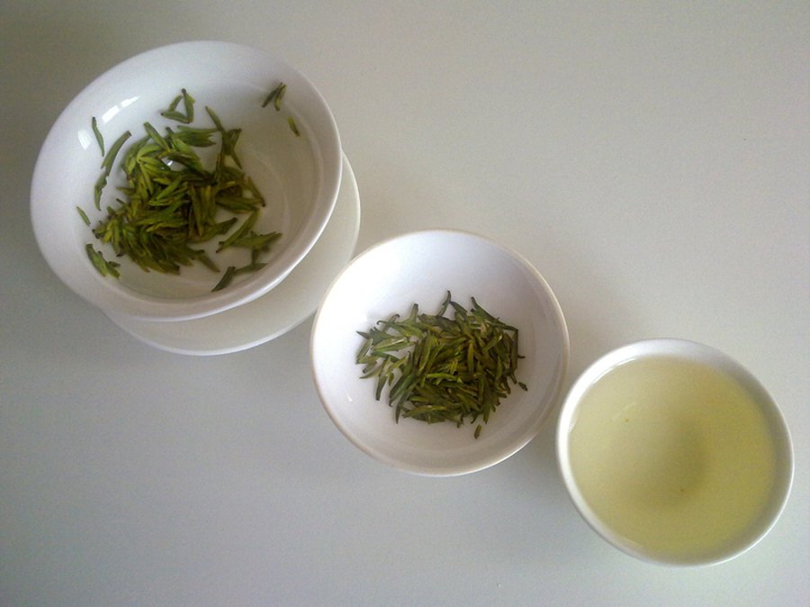

VapoCept Ingredients Explained: All 6 Doses Checked Against the Research
The label prints every milligram. We read each one against the studies, explain what ratios like 4:1 really mean, and ask why a joint supplement is the biggest line.

Key takeaways
- Six ingredients, 445 mg total, all printed: glucosamine, ginkgo, turmeric, marigold (lutein), green tea and bamboo silica.
- Glucosamine is 56% of the capsule. It's a joint ingredient with no controlled trials for memory or focus.
- The ginkgo is a 4:1 extract, not the EGb 761 standardized extract used in nearly all ginkgo research.
- Lutein comes to about 1.25 mg and EGCG to about 7.5 mg, well below studied amounts.
- Ratios aren't potency. A 30:1 turmeric extract says how much root was used, not how much curcumin you get.
VapoCept's ingredients are six extracts in one capsule: 250 mg glucosamine, 100 mg ginkgo leaf extract (4:1), 50 mg turmeric root extract, 25 mg marigold extract for lutein, 15 mg green tea extract and 5 mg bamboo extract for silica. All doses are printed. Most sit well below the amounts used in research.
That last point is the reason this page exists. A printed label is only useful if someone reads the numbers against what studies actually tested. Below we take each VapoCept ingredient in turn: what it is, why a focus supplement might include it, how the dose compares with research, and what we'd want to see instead. For the overall verdict, pricing and refund, see our full VapoCept review.

VapoCept: check today's price
A ginkgo-led daily capsule with turmeric, lutein and green tea, every dose printed. One capsule a day, stimulant-free. Sold only on the official site, with a 60-day money-back guarantee.
See the official price →What are the VapoCept ingredients, at a glance?
| Ingredient | Dose | Standardization on label | Share of the 445 mg |
|---|---|---|---|
| D-Glucosamine Sulfate Potassium Chloride | 250 mg | None (it's a single compound) | 56% |
| Ginkgo biloba leaf extract | 100 mg | 4:1 ratio, no marker compounds stated | 22% |
| Turmeric (Curcuma longa) root extract | 50 mg | 30:1 ratio, curcumin % not stated | 11% |
| Marigold (Tagetes erecta) flower extract | 25 mg | 5% lutein (about 1.25 mg) | 6% |
| Green tea (Camellia sinensis) leaf extract | 15 mg | 98% polyphenols, 80% catechins, 50% EGCG | 3% |
| Bamboo (Bambusa vulgaris) leaf extract | 5 mg | 30:1 ratio, 70% silica (about 3.5 mg) | 1% |
The other ingredients are a bovine gelatin capsule, magnesium stearate and microcrystalline cellulose, which are standard flow agents and fillers. There's no caffeine, sugar or artificial color listed.

How do you read an extract ratio like 4:1 or 30:1?
Three of the six VapoCept ingredients carry a ratio instead of a standardization. A 4:1 ratio means about four parts of raw plant went in to make one part of extract. So 100 mg of 4:1 ginkgo started as roughly 400 mg of dried leaf, and 50 mg of 30:1 turmeric started as about 1,500 mg of root.
Those bigger numbers sound reassuring, but a ratio describes how much plant was used, not how much active compound ended up in the capsule. Two 4:1 extracts can differ a lot in strength. Standardization, like "5% lutein" or "50% EGCG", is the more useful figure, because it guarantees a minimum amount of a specific molecule. VapoCept standardizes three ingredients and gives ratios for the other three.
Why is glucosamine VapoCept's biggest ingredient?
This is the oddest choice on the label. Glucosamine is an amino sugar that the body uses to build cartilage, and as a supplement it's sold almost entirely for joint pain and osteoarthritis. The form here, glucosamine sulfate stabilized with potassium chloride, is the one used in many joint trials.
For joints, those trials typically used 1,500 mg a day. VapoCept has 250 mg, about a sixth of that. For memory or focus, there are no controlled human trials to compare against at all. What exists is observational. Some large UK Biobank analyses linked regular glucosamine use with a lower risk of dementia, while a newer records analysis found people with mild cognitive impairment who took it were more likely to progress. We covered that second one in our article on the glucosamine and Alzheimer's study. Neither design can prove cause and effect.
So why lead with it? The label doesn't say. Glucosamine is inexpensive and adds bulk, and its anti-inflammatory story is sometimes extended to the brain in marketing. We'd rather see that 250 mg spent on a higher dose of standardized ginkgo or on an ingredient with real cognitive trials. If you have a shellfish allergy, note that glucosamine is often made from shellfish shells and the label doesn't name the source.
What do the other five VapoCept ingredients do?
With glucosamine set aside, the remaining 195 mg is where the focus and clarity story actually lives. Ginkgo carries most of it. The other four are antioxidants and minerals that show up in many brain formulas, usually at higher doses. Here they are in order of weight, largest first, with the research amount for each.
Is VapoCept's ginkgo the same ginkgo used in studies?
Not quite, and this is the detail that matters most. Ginkgo biloba is one of the best-researched herbs in the memory category, and nearly all of that research used one extract: EGb 761, standardized to about 24% flavone glycosides and 6% terpene lactones, at 120 to 240 mg a day. Those marker compounds are believed to drive ginkgo's effects on blood flow and nerve cells.
VapoCept lists 100 mg of a 4:1 extract with no flavone glycoside or terpene lactone percentages. It's ginkgo, but you can't tell whether it's comparable to the trial material. And even the trial material has a mixed record. The large GEM study, using 240 mg a day for several years, didn't prevent dementia or slow decline in older adults. Smaller studies in people with existing cognitive problems have been more positive. Our full guide to ginkgo biloba for memory walks through both sides.
What it's in there for: circulation and focus, essentially. What we'd want: a standardized extract at 120 mg or more, with the marker percentages printed.
What does turmeric do in VapoCept, and is 50 mg enough?
Turmeric's active compounds are curcuminoids, mainly curcumin. They're studied for inflammation and oxidative stress, two processes tied to brain aging. The best-known memory result came from a small UCLA trial in which older adults took a high-absorption curcumin twice daily for 18 months and scored better on memory tests than placebo.
VapoCept's 50 mg of 30:1 extract doesn't say how much curcumin it contains, and there's no black pepper extract or other absorption aid on the label. Plain curcumin is notoriously poorly absorbed. So the realistic expectation is a small antioxidant contribution, not a research-level curcumin dose. Our curcumin explainer, linked below, covers the absorption problem in more detail.
Why add marigold extract, and how much lutein do you get?
Marigold flowers are the commercial source of lutein, the yellow carotenoid that collects in the retina and, it turns out, in the brain. Higher lutein levels in the eye correlate with better processing speed and memory in some older adults, and a few supplement trials found small cognitive gains after a year.
Those trials used about 10 mg of lutein a day, usually with 2 mg of zeaxanthin. VapoCept's 25 mg of extract at 5% works out to roughly 1.25 mg of lutein, which is about what a typical American diet already supplies and far less than a cup of cooked spinach or kale. It's a fine nutrient. At this dose, it's a label line more than a lever.
How much green tea is in VapoCept?
The green tea extract is highly purified: 98% polyphenols, 80% catechins and 50% EGCG, the main catechin. That's good quality. The amount is the issue. Fifteen milligrams provides about 7.5 mg of EGCG, while a single cup of brewed green tea usually contains several times that.
Green tea's brain research mostly involves regular tea drinking, where caffeine and L-theanine come along for the ride. VapoCept doesn't list either. If you like green tea, brewing a cup or two gives you more of the studied compounds than this capsule does. The upside of such a small dose: it's far below the high EGCG intakes linked to rare liver problems.
What is bamboo silica doing in a brain supplement?
Bamboo leaf extract is a concentrated source of silica, the mineral form of silicon. It's mostly sold for hair, skin and nails. The brain argument is indirect: silicon may limit how much aluminum the body absorbs, and aluminum was once a suspect in Alzheimer's research. That theory never held up well, and there are no trials of silica for memory or focus.
The dose is also tiny. About 3.5 mg of silica, while Western diets typically supply 20 to 50 mg of silicon a day from grains, beer, coffee and water. We'd call this the least consequential line on the label.
Are VapoCept's ingredients safe together?
For most healthy adults, at these doses, the combination is unlikely to cause problems. The overlap to watch is bleeding. Ginkgo and turmeric each have mild antiplatelet effects, and glucosamine has been linked to higher INR readings in people on warfarin. Anyone on blood thinners, facing surgery or with a bleeding disorder should talk to a doctor first. Our VapoCept side effects page covers the full list, including pregnancy and shellfish allergy.
What would a stronger version of this formula look like?
If we redesigned VapoCept around the same theme, the changes would be straightforward. Here's what the research points to, compared with the current label.
| Ingredient | VapoCept now | Closer to research |
|---|---|---|
| Ginkgo | 100 mg, 4:1, not standardized | 120–240 mg, 24% flavone glycosides / 6% terpene lactones |
| Curcumin | 50 mg turmeric extract, % unknown | A stated curcumin amount in a high-absorption form |
| Lutein | About 1.25 mg | About 10 mg, plus 2 mg zeaxanthin |
| Green tea | About 7.5 mg EGCG | Paired with L-theanine and a known caffeine amount, or just brewed tea |
| Glucosamine | 250 mg | Removed, unless the product is also meant for joints |
That version would need more than one capsule, which is the trade-off. One-a-day convenience caps how much can fit. It's a reasonable design choice, as long as buyers understand what it costs in dose. To see how VapoCept stacks up against fuller formulas, check our best memory supplements of 2026.
How do VapoCept's ingredients compare with other memory formulas?
The clearest contrast is with products built on bacopa monnieri, the herb with the deepest trial base for memory in healthy adults. Memopezil, for instance, prints 200 mg of bacopa alongside rhodiola and L-theanine, three ingredients dosed in or near their studied ranges. Its weak spots are elsewhere, but its main memory ingredient is doing real work on paper. We set the two labels side by side in VapoCept vs Memopezil.
MemoHoney takes a different route again, leaning on nitric-oxide amino acids for blood flow, with ginkgo listed but undosed. VapoCept at least tells you its ginkgo amount, which is a point in its favor. Where VapoCept falls behind both is the share of the capsule spent on ingredients with no cognitive evidence. Over half of it goes to glucosamine.
None of these finished products has been tested in its own clinical trial. That's normal for the category, and it means the comparison always comes back to the same question: how close is each dose to what researchers actually gave people? On that measure, VapoCept's label is transparent but light.
Do the other ingredients in VapoCept matter?
Mostly for people with dietary limits. The capsule is bovine gelatin, which rules it out for vegetarians and vegans and may matter for anyone keeping kosher or halal, since the label doesn't state a certification. Magnesium stearate and microcrystalline cellulose are inert manufacturing helpers found in most capsules on the market. There's no gluten, dairy or soy listed, though the label doesn't carry an allergen statement either, so people with severe allergies should ask the company directly.
So, are VapoCept's ingredients good?
They're legitimate ingredients, honestly labeled, in small amounts. Ginkgo and lutein have real research behind them at higher doses. Turmeric is promising when absorbed. Green tea is pleasant and safe. Glucosamine and bamboo silica don't belong in a focus formula on current evidence, and together they make up 57% of the capsule by weight.
If you value a single gentle capsule and accept modest expectations, VapoCept is a transparent option. If you want each ingredient at a studied dose, this label tells you clearly that it isn't that product.
VapoCept: check today's price
A ginkgo-led daily capsule with turmeric, lutein and green tea, every dose printed. One capsule a day, stimulant-free. Sold only on the official site, with a 60-day money-back guarantee.
See the official price →Frequently asked questions
Does VapoCept have a proprietary blend?
No. Every one of the six active ingredients is listed with its own amount, so there's no hidden split. That makes it easy to compare each dose with research, which is what this page does.
Is the glucosamine in VapoCept from shellfish?
The label doesn't say. Glucosamine is commonly made from crab, shrimp or lobster shells, though some is produced by fermentation. If you have a shellfish allergy, ask the company about the source or talk to your allergist before taking it.
Does VapoCept contain black pepper or piperine?
No. The label lists no absorption enhancer for the turmeric. The only other ingredients are the gelatin capsule, magnesium stearate and microcrystalline cellulose.
How much caffeine is in VapoCept's green tea extract?
Caffeine isn't listed on the label. With only 15 mg of a polyphenol-standardized extract, any natural caffeine would be a trace amount, far less than a cup of tea.
Is there anything for eyes in VapoCept?
The marigold extract supplies lutein, a carotenoid that concentrates in the retina. At about 1.25 mg it's well under the 10 mg used in eye and cognition studies, so it shouldn't be treated as an eye supplement.
What is magnesium stearate and is it safe?
It's a common flow agent that keeps capsule powder from sticking to manufacturing equipment. It's used in tiny amounts and is considered safe in food and supplements.
Can I get these ingredients from food instead?
Partly. Leafy greens supply more lutein than the capsule, and a cup or two of brewed green tea gives more EGCG. Turmeric in cooking adds curcumin in small amounts. Ginkgo extract isn't something you can get from a normal diet.
Seen the label? See the price.
VapoCept prints all six doses and backs official orders with a 60-day money-back guarantee. Check current pack prices on the official site.
See VapoCept's official price →Related: VapoCept review · Does VapoCept work? · Ginkgo biloba for memory · Curcumin for memory · Green tea and brain health · Best memory supplements of 2026